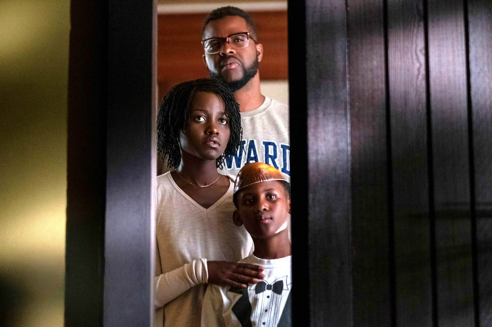

Jordan Peele has returned with another smash hit to top the likes of his first directorial debut, Get Out. His first movie grossed over $170 million in the United States and Canada and over $75 million in other territories, for a combined worldwide total of $255 million. So, Peele had a lot of expectations resting on his shoulders for his next film, and Us does not disappoint.
The basis of the movie rests on a family that goes to their beach house for a vaction, expecting to relax and unwind with friends. But, their vacation takes a turn for the worst when some unexpected strangers arrive. The movie is a scary horrifying story about the family and their unforeseen evil clones. Lupita Nyong'O stars as Adelaide Wilson, the mother of the family who is haunted by a past traumatic experience and becomes rightfully paranoid that something bad might happen to her family. Winston Duke, Shahadi Wright Joseph and Evan Alex play the rest of the family, all of whom are confronted with the strangers that happen to take the same faces as them.
As Hollywood begins to shift to accomodate for the unique and diverse population that comprises its audience, films like Us mark major changes in the faces that we see on the big screen. The family in Us are all African-American, and all are dark-skinned. This is a major deal for movie-goers who can be comforted in seeing people who look like them act in such mind-blowing roles. Additionally, the types of movies that we see, horror or not, also mark a major change in content creation. Peele prides himself on incorporating major social themes and trends into the films he creates, and while Get Out shed light on racial disparities, Us might show us the dangers that lie within our own personas.
| Movie Theater | Sunday (PM) | Monday (PM) | Tuesday (PM) | Wednesday (PM) | Thursday (PM) | Friday (PM) | Saturday (PM) |
|---|---|---|---|---|---|---|---|
| GTC Beechwood | 1:30, 4:15, 7:15, 10:00 | 1:30, 4:15, 7:15, 10:00 | 4:15, 7:15, 10:00 | 4:15, 7:15, 10:00 | 4:15, 7:15, 10:00 | 1:30, 4:15, 7:15, 10:00 | 1:30, 4:15, 7:15, 10:00 |
| AMC Athens 12 | 1:15, 4:15, 7:30 | 12:45, 4:15, 7:45 | 12:45, 4:15, 7:45 | 12:45, 4:15, 7:45 | 12:55, 4:00, 7:15 | 1:15, 4:15, 7:30, 10:45 | 1:15, 4:15, 7:30, 10:45 |
All information from this article was retrieved from here. The images were retrieved from here, as well as from here.